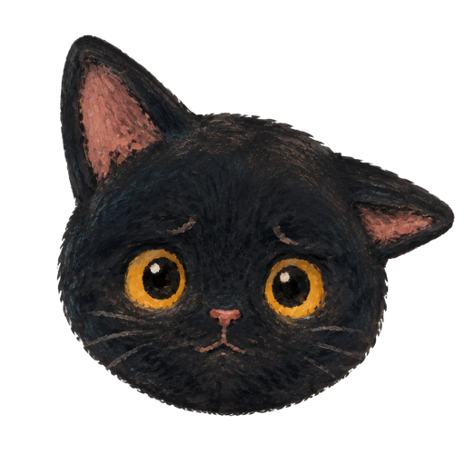

DearAnxiety
Manage your anxiety daily
Anxiety can feel awful. DearAnxiety helps you manage your anxiety with one cat for each anxiety. Each cat is an inner representation of one specific anxiety.
Download on the App Store Free. No ads, no tracking.
Every feature is free
Create unlimited cats, use every cat style, add photos and voice notes, complete guided check-ins, and see your anxiety patterns. There is no subscription, in-app purchase, advertising, analytics, or third-party tracking.
Record what happened
Rate how bad the anxiety feels from 1 to 10. Check in later and record whether it got better, stayed the same, got worse, or ended.
Private on your iPhone
There are no ads, analytics, or third-party tracking.